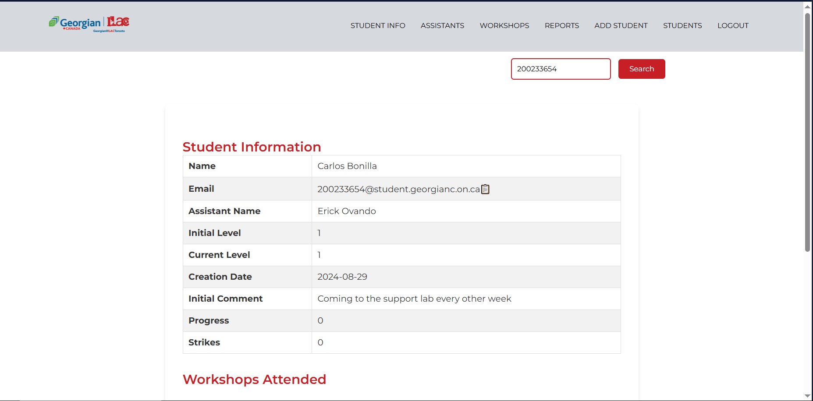

Recents Projects
Voice Assistant using Python

Developed an advanced voice assistant using Python capable of performing various tasks through voice commands. The project integrates several Python libraries and APIs to enhance functionality and user experience:
- Speech Recognition: I implemented speech recognition using the speech_recognition library to convert audio input into text, enabling the assistant to understand and process user commands.
- Text-to-Speech: I utilized pyttsx3 for text-to-speech conversion, providing auditory responses to user queries.
- Web Browsing and Automation: I incorporated a web browser and pywhatkit to open websites, perform internet searches, and play YouTube videos based on user requests.
- Stock Price Retrieval: I integrated yfinance to fetch and report the current stock prices of major companies.
- Humor and Entertainment: I added functionality for the assistant to tell jokes using pyjokes.
- Wikipedia Integration: I used the Wikipedia API to fetch and read summaries of topics queried by the user.
- Localization: I configured the assistant to operate in Spanish, providing a more personalized experience for Spanish-speaking users.
This project demonstrates proficiency in Python, voice recognition technology, API integration, and automation, showcasing the ability to create interactive and user-friendly applications.
Restaurant Billing System using Python and Tkinter

Developed a comprehensive restaurant billing system using Python and Tkinter, demonstrating strong proficiency in GUI design and software development. The key features of the project are as follows:
- Dynamic User Interface: I utilized Tkinter to create an intuitive and interactive user interface, including panels for food, drinks, and desserts, a calculator for easy billing, and a text area for generating and displaying receipts.
- Automated Calculations: I implemented automated price calculations for selected items, including subtotal, taxes, and total amounts, ensuring accuracy and efficiency.
- Receipt Generation: I developed functionality to generate, display, and save detailed receipts, capturing all ordered items, quantities, costs, and totals.
- Interactivity: I enabled real-time updates and interactivity using Tkinter widgets like Check buttons, Entry fields, and Buttons, enhancing user experience.
- Data Management: I incorporated Python's datetime and random modules to generate unique ticket numbers and timestamps for each receipt.
This project showcases my ability to develop practical, user-friendly applications and my understanding of Python and Tkinter for desktop GUI development.
Django Web Application: Task Management System

Developed a task management web application utilizing the Django framework and the Python programming language. The project encompasses comprehensive task management and user authentication functionalities. Notable features comprise:
- User Authentication: Facilitates user registration, login, and logout processes. It encompasses a robust authentication system and login and registration forms.
- Task Management: Enables users to create, view, modify, and remove tasks. The interface exhibits pending and completed tasks, offering options to search and filter tasks.
- User Interface: Incorporates HTML and CSS to deliver an aesthetically appealing visual presentation, featuring a design structure inclusive of a top bar, input forms, and task display.
- Interactivity: Implements interactive elements such as task search and the capacity to designate tasks as complete or incomplete, providing real-time updates to the task list.
- CSRF Protection: Integrates CSRF tokens in forms to fortify the application against cross-site request forgery attacks.
This project serves as a testament to proficiencies in web development using Django, database management, and user interface design.
Facial Recognition Attendance System using Python

Developed a facial recognition attendance system using Python that automates the process of employee identification and entry logging. The project leverages several Python libraries to achieve real-time facial recognition:
- OpenCV: I implemented OpenCV to handle image processing tasks such as reading employee images, capturing real-time video from a webcam, and drawing bounding boxes around detected faces.
- face_recognition: I utilized the face_recognition library to encode facial features from a database of employee images and to match these encodings against live webcam captures.
- Image Encoding and Comparison: I developed functionality to convert employee images to encoded formats and perform real-time comparisons with webcam captures to verify identities.
- Data Management: I managed attendance records by automatically logging entry times into a CSV file when a match is detected.
- Real-Time Feedback: I incorporated visual feedback mechanisms, such as drawing rectangles around recognized faces and displaying employee names on the screen.
This project demonstrates proficiency in Python, computer vision, real-time data processing, and machine learning techniques, highlighting my ability to build efficient and interactive applications for practical use cases like automated attendance systems.
Web Scraping using Python

Developed a web scraping script using Python to extract and analyze book titles with high ratings from an online bookstore. The project integrates key Python libraries to efficiently scrape and process data from multiple web pages:
- Requests: I used the requests library to send HTTP requests and retrieve the HTML content of multiple pages from the target website.
- BeautifulSoup: I employed BeautifulSoup to parse the HTML content, locate the specific elements related to book information, and filter books based on their star ratings.
- Data Extraction and Filtering: I implemented logic to iterate through 50 pages of the online bookstore, extracting book titles that have 4 or 5-star ratings and storing them in a list.
- Data Output: I displayed the extracted book titles on the console, providing a quick and clear view of the high-rated books.
This project demonstrates proficiency in web scraping techniques, data parsing, and Python libraries such as requests and BeautifulSoup, showcasing my ability to automate data extraction tasks and work with dynamic web content.
CMPG Support Lab
Developed and collaborated with developers on a comprehensive web application using PHP, JavaScript, HTML, and CSS to enhance the management of a Computer Programming Support Lab. This platform tracks student progress, workshop attendance, and visits to the support lab. Key features include:
- Database Integration: Utilized phpMyAdmin to manage a relational database that securely stores student, assistant, and superuser information.
- Security Measures: Implemented security methods to protect sensitive data and ensure secure access for different user roles.
- User Authentication: Developed login and registration pages for students and assistants, providing controlled access to the system.
- Student Management: Created pages to view and manage student information, track progress, and record workshop attendance.
- Workshop Management: Added functionality to create and manage workshops, allowing for better organization and tracking of lab activities.
This project demonstrates proficiency in web development, database management, and security practices, showcasing the ability to build robust and user-friendly applications to support educational environments.